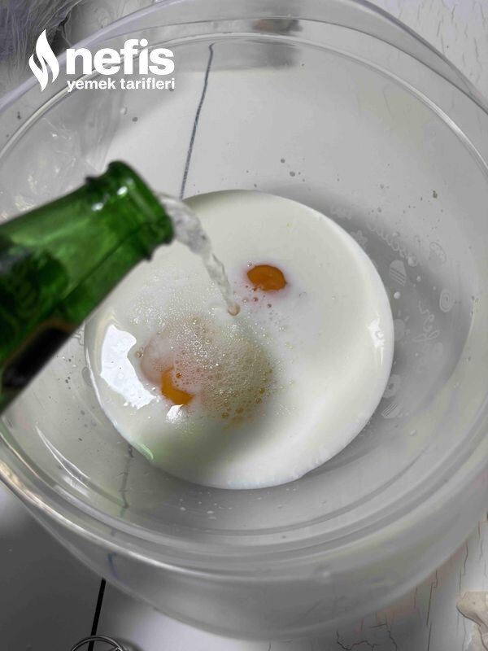

🍽️ 12-14 kişilik⏱️ Hazırlık: 20 dk🔥 Pişirme: 30 dk🏷️ Hamur İşi Tarifleri🏷️ Börek Tarifleri
Malzemeler
- 6 adet yufka
- 1 şişe maden suyu
- 250 mg süt
- 1 çay bardağı sıvı yağ
- 3-4 yumurta
- 350 gram kadar kıyma
- 2 soğan
- Tuz
- Karabiber
- Pulbiber
- 1 kahve fincanı kadar zeytinyağı
- 250 gram lor (rendelenmiş)
- 250 gram tulum peyniri (rendelenmiş)
- 250 gr beyaz peynir (rendelenmiş)
Hazırlanışı
- Kıymalı harcı kavurup hazırlıyoruz, önce kıymayı tavamıza alıyoruz, su salıp çekince soğanları ve yağı ilave ederek iyice kavuruyoruz, baharatları ve tuzu ilave ederek ocağı kapatıp soğumaya bırakıyoruz.
- Yufkaları katlayıp, 1 parmak kadar genişlikte kesiyoruz. Yufkaların yarısını yağlanmış tepsiye diziyoruz.
- Sos malzemelerini karıştırıp çırpıyoruz, sosun yarısını yufkaların üzerine eşit gezdiriyoruz.
- Arasına harcımızı koyarak eşit yayıyoruz kalan yufkaları üzerine eşit yayıyoruz kalan sosu da eşit gezdiriyoruz.
- 180 derecede fırında üzeri kızarana kadar pişiriyoruz ilk sıcaklığı geçince servis yapıyoruz. Afiyet olsun.